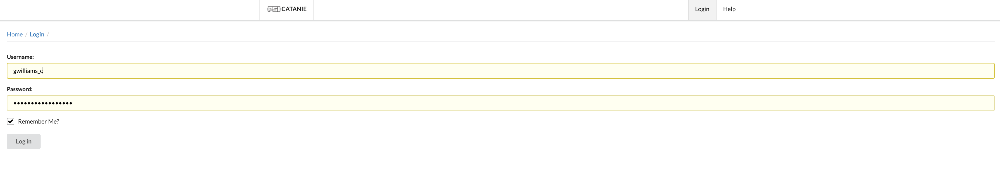

Login
There are two types of account associated with the DataCatalog: Functional and System. A functional account will primarily be used by software and system administrators to deal with backups and other tasks.
System accounts are tied into the login system that is used by your institution, for example: Active Directory. You are able to log in to the system using the same credentials you use on that account.
Logging In

Enter your username and password. If an error occurs, the reason will be displayed in a red banner above the login page.